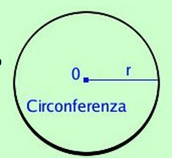
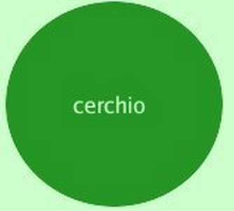
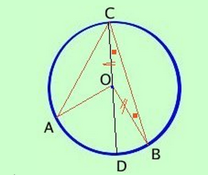
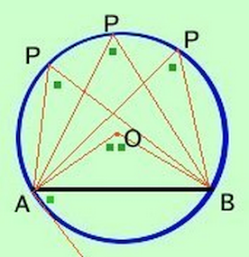
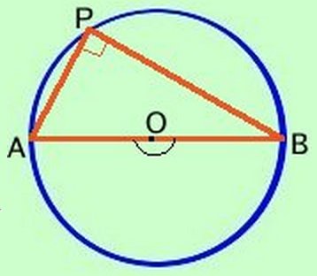
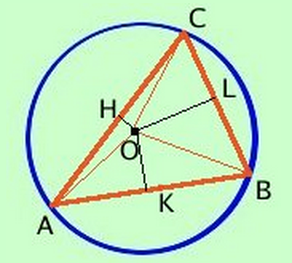
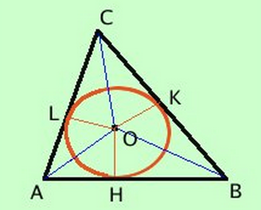

Circonferenza e cerchio
Antonio Pierro @antonio_pierro_
Per consigli, suggerimenti, eventuali errori o altro potete scrivere una email a antonio.pierro[at]gmail.com
Circonferenza
- Definiamo circonferenza il luogo geometrico dei punti del piano equidistanti da un punto fisso detto centro

Cerchio
- Definiamo cerchio la parte finita di piano delimitata da una circonferenza

Definizioni sulla circonferenza
Relazione fra archi e corde
Mutue posizioni fra due circonferenze 1/2
Mutue posizioni fra due circonferenze 2/2
Angoli al centro ed alla circonferenza
- Teorema: In ogni circonferenza l'angolo al centro è doppio dell'angolo alla circonferenza che insiste sullo stesso arco.
- Conseguenza immediata del teorema è che tutti gli angoli alla circonferenza che insistono sullo stesso arco sono congruenti (infatti sono tutti congruenti alla meta' dello stesso angolo al centro)


Triangolo rettangolo inscritto in una semicirconferenza
- Ogni triangolo inscritto in una semicirconferenza è rettangolo
- Dimostrazione: l'angolo \(A\hat{P}B\) è metà dell'angolo piatto \(A\hat{O}B\)
- Vale anche il viceversa

Circonferenza e punti notevoli del triangolo
- Il circocentro (punto di incontro degli assi dei suoi lati) è il centro della circonferenza circoscritta al triangolo.
- L'incentro (punto di incontro delle bisettrici dei suoi angoli) è il centro della circonferenza inscritta nel triangolo.


Alcune formule che riguardano \(\pi\)
- Il perimetro di un cerchio di raggio r: \(C = 2 * \pi * r \)
- L'area di un cerchio di raggio r: \[A = \pi * r^2\]
Il volume di una sfera di raggio r: \[V = \frac{4}{3} * \pi * r^3\]La superficie di una sfera di raggio r: \[S = 4 * \pi * r^2\]